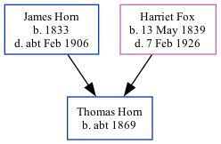

The child of James Horn (a brewer's labourer) and Harriet FoxThomas Horn, the first cousin three-times-removed on the father's side of Nigel Horne, was born in Ramsgate, Kent, England c. 18691.
Throughout his life, he lived at Hertford Cottage, Hertford Place in Ramsgate on 2 Apr 18712; and at his birthplace in 18911.
1891 England Census Online publication - Provo, UT, USA: The Generations Network, Inc., 2005.Original data - Census Returns of England and Wales, 1891. Kew, Surrey, England: The National Archives of the UK (TNA): Public Record Office (PRO), 1891. Data imaged from The National (Relation to Head of House: Son)
1871 England, Wales & Scotland Census - Findmypast (was age 3 and the son of the head of the household)
Family Tree

Map
Generated by ged2site. Last updated on Feb 19, 2025